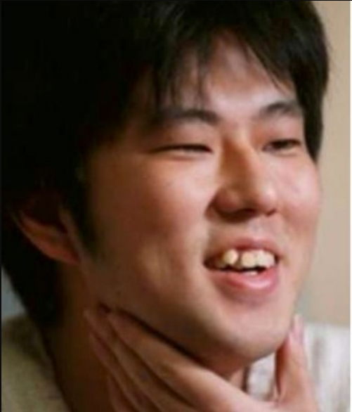

Kehidupan Awal
Eiichiro Oda lahir pada 1 Januari 1975 di Kumamoto, Jepang. Dia mengatakan bahwa pada usia empat dia memutuskan untuk menjadi seorang seniman manga untuk menghindari keharusan mendapatkan "pekerjaan lebih nyata". Pengaruh terbesarnya adalah Akira Toriyama dan seri Dragon Ballnya. Ia ingat bahwa minatnya pada bajak laut mungkin dipicu oleh serial animasi TV populer berjudul Vicky the Viking. Ia menyerahkan karakter bernama Pandaman untuk manga gulat klasik Yudetamago, Kinnikuman. Pandaman tidak hanya digunakan dalam bab manga tetapi kemudian akan kembali sebagai karakter cameo berulang dalam karya Oda sendiri.